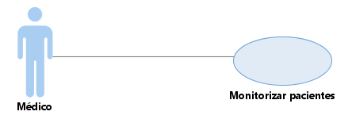

| Documentación UML de Monitorizar pacientes |
|  |
| Clasificadores | |
| Diagramas | |
Propiedades:
| Name | Monitorizar pacientes |
| Namespace | Evolución del estudio |
| Nesting Package | Evolución del estudio |
| Owner | Evolución del estudio |
| Qualified Name | Modelo de casos de uso::Evolución del estudio::Monitorizar pacientes |
| Visibility | Public |
| Documentación UML de Monitorizar pacientes |